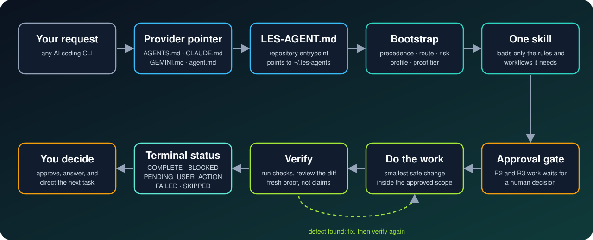

Why LES
Switching AI tools should not change how work gets done.
Every CLI, same rules
Codex, Claude Code, Gemini CLI, and Antigravity read one bootstrap.
Evidence, not claims
Every task ends in a terminal status backed by the checks that actually ran.
Humans keep authority
Risk levels R0–R3 decide what needs approval. A handoff never grants authority.
No footprint
A repository gets LES-AGENT.md plus one pointer file per CLI. The source stays in ~/.les-agents.
How it works
A request reaches one bootstrap, then exactly one skill. Defects loop back until verification passes.

Risk and status
Each level sets what must happen before acting. Completion needs proof.
R0
Read-only inspection. Proceed.
R1
Reversible local edit. Proceed within stated scope.
R2
Broad or compatibility-sensitive edit. Plan, targeted proof, rollback path.
R3
External mutation, release, credentials, destructive action. Explicit human approval right before acting.
COMPLETEBLOCKEDPENDING_USER_ACTIONFAILEDSKIPPED
Quick start
macOS, Linux, and Windows. Node.js 20+.
Install once per machine
Run outside a checkout of the LES repository, then open a new terminal.
npx -y @hakienit/lesConnect a repository
LES detects your AI CLIs and preselects them all.
cd my-project les connectWork as usual
Your AI CLI loads LES before it starts. Check the setup any time.
les doctor
Commands
Add --dry-run to any repository command to preview it.
| Command | What it does |
|---|---|
les | Install or update ~/.les-agents. |
les connect [provider...] [--all] | Create LES-AGENT.md and the pointer files for detected CLIs. |
les on, les off [provider] | Enable or disable routing. |
les doctor | Check the install, the repository pointers, and for updates. |
les guard on, les guard off | Claude Code hooks: block secret reads, deletes outside the project, and force pushes to protected branches; gate edits until the bootstrap is read. A guardrail, not a sandbox. |
les lint FILE... | Flag placeholders and unmeasurable acceptance criteria in a spec. |
LES never overwrites a pointer file you own and never writes to provider directories such as ~/.codex, ~/.claude, or ~/.gemini.
What's inside
Small, explicit layers.
Policies
Principles, precedence, a 17-phase lifecycle, 14 rules, and 10 workflows.
Skills
Operational entrypoints with triggers, steps, completion criteria, and guardrails.
Profiles
Optional domain rules. The frontend profile covers design, accessibility, performance, and browser proof.
Adapters
Thin host routing so each CLI reaches the same bootstrap.
Update every repository at once
Every repository points at the user store. LES never updates itself.
npx -y @hakienit/les